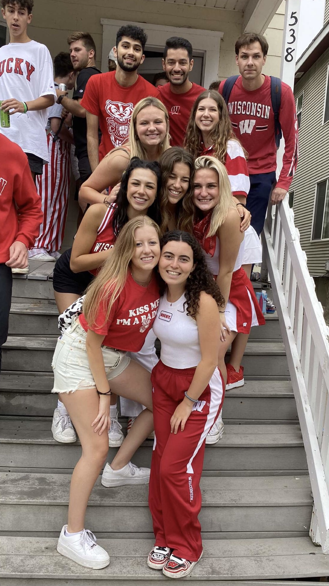
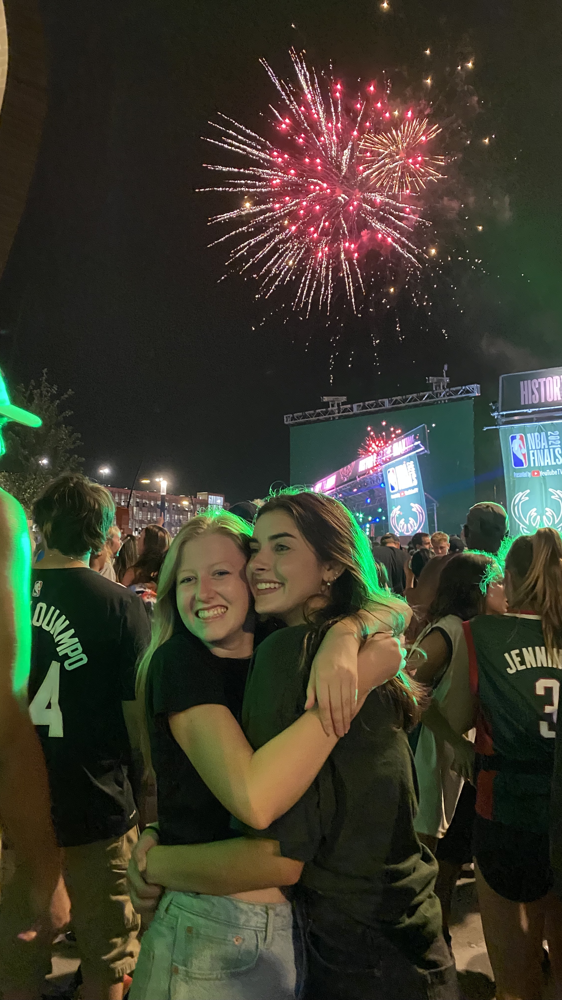

Football Games

Madison is not Madison without the vibrant-energetic game days. Game days on campus are some of my favorite days and are truly what keeps me going in the fall. I love waking up and getting ready with my roommates on a beautiful saturday morning knowing we have a fun day in store. The energy in downtown Madison on game days is unmatched!
Bucks Games

This summer, I worked in Madison but found myself in Milwaukee quite often. My brother has lived in Milwaukee the last few years, so the Bucks playing in the NBA finals was the perfect excuse to get out of Madison, see my brother, and have a fun night at the Deer District. I will look back on those few weeks and cherish those memories with a smile on my face!
Boating on Mendota

Growing up in Madison, the lakes have become a huge part of my life. Whether it was tanning with my friends at the Shorewoord Boat House in high school or going to the Memorial Union in college, every chapter of my life in Madison has been marked with Lake Mendota in some way or another. This picture is me and my pledge class on a pontoon on Lake Mendota this past summer!